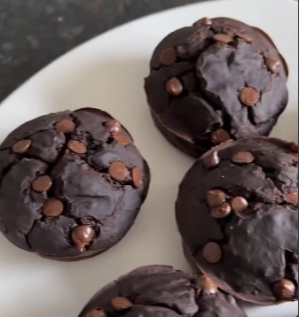

Recetas Fit

Ingredientes
- 2 manzanas (aprox una taza de puré de manzana, se pueden usar bananas también)
- 2 huevos
- ¼ taza (60g) de mantequilla de maní (podes reemplazar por aceite)
- 1 cdita de esencia de vainilla
- ¼ taza (90g) de miel o 3 Cdas de edulcorante líquido o stevia (podés reemplazar por 90g de azúcar o eritritol/monk-fruit)
- ½ taza (50g) de cacao amargo en polvo (podés reemplazar por harina de algarroba)
- ½ taza (60g) de proteína o leche en polvo o harina de almendras o maní (o lo podes hacer con harina usando harina de avena o la que prefieras)
- 2 cditas de polvo de hornear
- ¼ cdita (una pizca) de sal
- 1 taza de chips de chocolate sin azúcar o amargo
Pasos
- Pisar las bananas y agregar los huevos, el endulzante o miel, mantequilla de maní y la vainilla e integrar bien.
- Agregar el cacao, la proteína o harina que elijas y el polvo de hornear. Batir hasta integrar bien y agregar los chips de chocolate.
- Llevar la mezcla a un molde aceitado. Cubrir con los chips de chocolate que reservamos por encima y cocinar por 40 min en horno precalentado a 180°C.
- Para terminar podés cubrir con hilos de chocolate y mantequilla de maní.